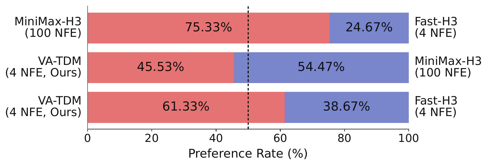
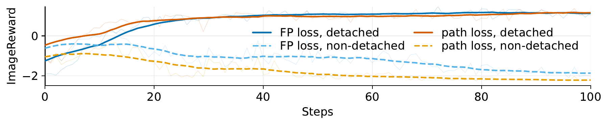
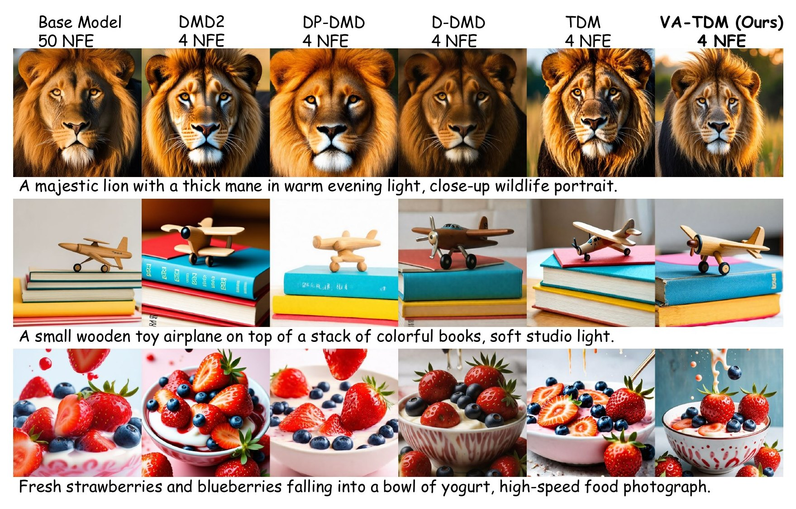

Abstract
Few-step distillation offers efficient generation with diffusion and flow models, but preserving quality with only a few sampling steps remains challenging. Distribution-matching methods via score distillation provide a strong foundation, yet they rely on accurately tracking the student’s changing distribution. At intermediate generation steps in few-step sampling, student-score estimation can be difficult, and commonly used estimators may describe a different distribution from the one used to update the student.
Flow matching allows a more flexible approach to supervision through velocity fields constructed from the student’s sampling process. Building on this perspective, we introduce Velocity Adversarial Distillation (VAD), which uses a learned critic to compare student and teacher fields and turn their disagreement into feedback for learning. VAD unifies score distillation, Fisher-based matching, and moment matching, also explaining existing heuristic MMD updates and delivering new training objectives.
We further develop VA-TDM, which follows trajectory distribution matching: providing supervision for partial denoising along the student trajectory. Beyond this, VA-TDM combines transition-aware online velocity learning and dual-form VAD supervision across intermediate student transitions. Extensive results show that VA-TDM achieves state-of-the-art four-step performance in both text-to-image and text-to-video generation across various backbones and scales effectively to 33B MiniMax-H3. In particular, VA-TDM-H3 notably outperforms the few-step Fast-H3 and is closer to the original many-step H3 according to human preference.
Audio-Video Generation on 33B MiniMax-H3
Side-by-side samples from the 100-NFE teacher, the official 4-NFE Fast-H3, and our 4-NFE VA-TDM-H3. All clips are 768×512, 24 fps, about 10 seconds, with the original generated audio. Press Play all to watch the three in sync, and choose which model’s soundtrack to hear.
Full prompt

Method
Why velocity instead of score?
Trajectory Distribution Matching (TDM) supervises every intermediate transition of a few-step student, so each step learns a partial denoising task. Score-based updates, however, need the score of the student's perturbed intermediate output. The student's clean prediction and its retained residual are correlated, so perturbing an intermediate output is not the same as adding fresh Gaussian noise to the clean prediction: direct estimation can involve high-variance targets, while clean-target denoising can estimate a different distribution from the one being supervised. Velocity targets can be defined through paths with coupled endpoints, which lets us build student fields that respect the actual sampling process.
Velocity Adversarial Distillation (VAD)
A vector-valued critic \(\mathbf f\) compares the teacher velocity \(\mathbf u_\tau\) with a student velocity \(\bar{\mathbf v}^F_{\theta,\tau}\). The critic maximizes
whose optimum is exactly the velocity residual \(\mathbf f^\star_F=\mathbf u_\tau-\bar{\mathbf v}^F_{\theta,\tau}\). The student opposes the critic, and the game admits a Nash equilibrium with \(\bar{\mathbf v}^F_{\theta^\star,\tau}=\mathbf u_\tau\) and \(\mathbf f^\star\equiv\mathbf 0\).
Which field to match
A-form is a rectified velocity capturing the expected clean prediction conditioned on a perturbed sample: low-variance, conditional-moment supervision.
B-form is a score-equivalent Gaussian velocity for the student's perturbed distribution: full distributional supervision.
How to update the generator
The pathwise update differentiates through the whole sampling chain. The conditional-mean update moves only the student velocity and is made tractable by a flow-product surrogate with the same gradient.
A unified view
Different choices recover reverse-KL score distillation, Fisher-based field matching and conditional moment matching. VAD also explains the heuristic update of MMD and derives a surrogate recovering the exact gradient of its intended objective.
VA-TDM: distillation along the student trajectory
- Dual-form supervision with a shared backbone. A-form and B-form games are optimized together, \(\mathcal L_{\mathrm{mix}}=\lambda_m\mathcal L^{A}_{\mathrm{mix}}+(1-\lambda_m)\mathcal L^{B}_{\mathrm{mix}}\), with two online-field heads on one backbone. Sharing reduces cost and also improves quality.
- Transition-aware online fields. Samples from different student steps follow different distributions even at the same noise level, so field estimation is conditioned on the transition being supervised.
- Path / flow-product mixing. \(\mathcal L^F_{\mathrm{mix}}=(1-\lambda)\mathcal L^F_{\mathrm{path,sg}}+\lambda\mathcal L^F_{\mathrm{fp,sg}}\) gives an explicit knob for balancing the adversarial game.
- Regularization-corrected critic. The online field is regularized toward the teacher velocity, and the critic is rescaled to \(\mathbf f^F_\psi=(1+\lambda_r)(\mathbf u_\tau-\mathbf h^F_\psi)\) accordingly.
- On-trajectory ODE regression warm-up. Before VAD, the student regresses multi-step teacher ODE targets from its own rollouts, which directly targets the intermediate transitions VA-TDM optimizes.
No extra cost is added at inference: the student still samples in four steps.

Text-to-Image Results
Four-step generators distilled from SD3.5-Medium and FLUX.2-Klein-Base 4B. GenEval and OCR measure prompt following, Aesthetic Score image quality, ImageReward / PickScore / HPS human preference (on DrawBench), and pairwise LPIPS sample diversity. Best few-step results are bold, second best underlined.
| Model | NFE | GenEval | OCR | Aest. | ImgRwd | PickScore | HPSv2 | HPSv3 | LPIPS |
|---|---|---|---|---|---|---|---|---|---|
| Teacher (CFG 4.5) | 50×2 | 0.65 | 0.58 | 5.37 | 0.86 | 0.8628 | 0.2805 | 9.78 | 0.61 |
| Teacher (CFG 7) | 50×2 | 0.67 | 0.62 | 5.37 | 0.96 | 0.8640 | 0.2854 | 9.87 | 0.60 |
| DMD2 | 4 | 0.60 | 0.53 | 5.55 | 1.00 | 0.8648 | 0.2977 | 11.18 | 0.53 |
| D-DMD | 4 | 0.55 | 0.56 | 5.51 | 0.99 | 0.8567 | 0.2897 | 10.93 | 0.57 |
| DPDMD | 4 | 0.62 | 0.33 | 5.28 | 0.80 | 0.8530 | 0.2707 | 8.13 | 0.59 |
| TDM | 4 | 0.61 | 0.57 | 5.58 | 1.01 | 0.8679 | 0.2969 | 11.54 | 0.57 |
| VA-TDM (Ours) | 4 | 0.67 | 0.59 | 5.65 | 1.02 | 0.8702 | 0.3010 | 11.89 | 0.58 |
| Model | NFE | GenEval | OCR | Aest. | ImgRwd | PickScore | HPSv2 | HPSv3 | LPIPS |
|---|---|---|---|---|---|---|---|---|---|
| Teacher (CFG 4.0) | 50×2 | 0.77 | 0.60 | 5.31 | 0.85 | 0.8605 | 0.2768 | 10.28 | 0.56 |
| Teacher (CFG 7) | 50×2 | 0.80 | 0.64 | 5.38 | 0.93 | 0.8620 | 0.2840 | 10.58 | 0.54 |
| FLUX.2-Klein 4B (released) | 4 | 0.78 | 0.64 | 5.28 | 1.04 | 0.8746 | 0.2886 | 11.27 | 0.47 |
| VA-TDM (Ours) | 4 | 0.80 | 0.69 | 5.43 | 1.07 | 0.8694 | 0.2930 | 11.58 | 0.56 |
| Configuration (4-step SD3.5-Medium) | GenEval | OCR | Aest. | ImgRwd | PickScore | HPSv2 | HPSv3 | LPIPS |
|---|---|---|---|---|---|---|---|---|
| \(\lambda_m=1\) (A-form only) | 0.64 | 0.55 | 5.53 | 1.00 | 0.8671 | 0.2949 | 11.20 | 0.58 |
| \(\lambda_m=0\) (B-form only) | 0.61 | 0.57 | 5.57 | 0.99 | 0.8665 | 0.2987 | 11.47 | 0.59 |
| \(\lambda_m=0\) w/o transition-aware field | 0.58 | 0.53 | 5.56 | 0.99 | 0.8655 | 0.2964 | 11.13 | 0.56 |
| \(\lambda_m=0.8\) w/o shared backbone | 0.62 | 0.56 | 5.55 | 0.99 | 0.8669 | 0.2971 | 11.33 | 0.57 |
| \(\lambda_m=0.8\) | 0.63 | 0.58 | 5.56 | 1.01 | 0.8674 | 0.2983 | 11.47 | 0.58 |
| + path/flow-product mixing (\(\lambda=0.7\)) | 0.65 | 0.57 | 5.56 | 0.96 | 0.8687 | 0.2950 | 11.39 | 0.59 |
| + field regularization (\(\lambda_r=1\)) | 0.66 | 0.58 | 5.58 | 0.96 | 0.8682 | 0.2952 | 11.44 | 0.57 |
| + regularization-corrected critic | 0.67 | 0.59 | 5.65 | 1.02 | 0.8702 | 0.3010 | 11.89 | 0.58 |

BibTeX
@article{luo2026vatdm,
title = {VA-TDM: A Unified View for Improving Few-Step Diffusion Models
by Velocity Adversarial Distillation},
author = {Luo, Yihong and Pang, Tianyu and Hu, Tianyang},
journal = {arXiv preprint},
year = {2026}
}